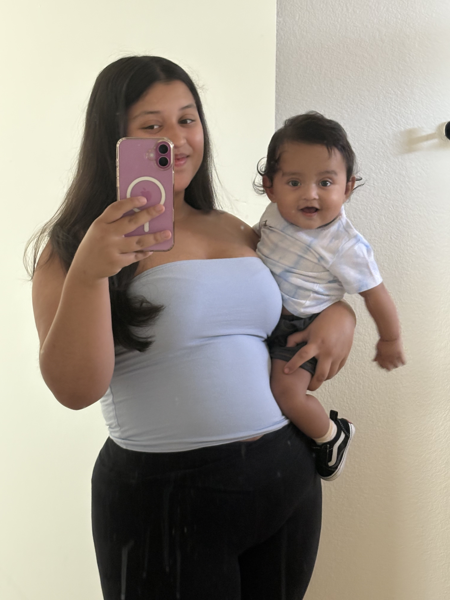
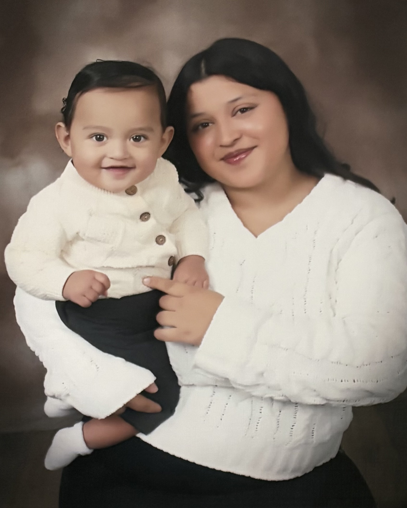

KAITLYN VASQUEZ
SOFTWARE ENGINEER IN TRAINING • CREATIVE • MOTHER
About Me
I graduated high school in 2024 a full year ahead of my class. At 19, I am a mother to my 1 year old son and live independently with my supportive partner, fueled by the goal of transferring to UCLA or USC for Computer Science. Every line of code I write is driven by my desire to build a future for my family. I am Determined, Responsible, and Resilient.


Academic Roadmap & Skills
Currently maintaining a 3.5 GPA at Victor Valley College while completing core prerequisites:
Calculus I & II & III Physics for Engineers C++ & Phython Programming Discrete MathematicsTechnical Proficiencies:
C++ HTML5 / CSS3 Git/GitHub Technical DocumentationTechnical Projects
Developing a responsive personal brand site using semantic HTML and custom CSS to document my transfer journey and business growth.
(Class Project) Created a terminal-based application to manage product data, demonstrating knowledge of loops, arrays, and file I/O.
More projects currently in development...
The Studio & Sweets
I run a creative business specializing in mini cakes and handmade crafts. This entrepreneurship taught me management, attention to detail, and the beauty of building things from scratch—skills that directly translate to software engineering.